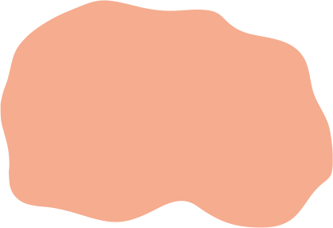

Українська церква у XX – на початку XXІ ст.
Православ'я
|  | території поширення православних віросповідань |
| церковна столиця Української православної церкви Київського патріархату (УПЦ-КП) | |
| центри єпархій Української православної церкви Київського патріархату (УПЦ-КП) | |
| церковна столиця Української автокефальної православної церкви (УАПЦ) | |
| центри єпархій Української автокефальної православної церкви (УАПЦ) | |
| центри єпархій Української православної церкви (УПЦ в юрисдикції Московського патріархату) | |
| центр поширення старообрядництва | |
| райони поширення старообрядництва |
Греко-католицизм
| території впливу Української греко-католицької церкви | |
| резиденція Верховного Архієпископа Української греко-католицької церкви (УГКЦ) | |
| центри єпархій Української греко-католицької церкви (УГКЦ) |
Католицизм
| центри єпархій поширення Римської католицької церкви | |
| центри районів поширення Римської католицької церкви |
Осередки інших релігійних організацій
| території впливу протестантських церков | |
| осередки діяльності Вірменської Апостольської церкви | |
| осередки діяльності громад юдаїстів | |
| осередки діяльності громад караїмів | |
| осередки діяльності громад мусульман |